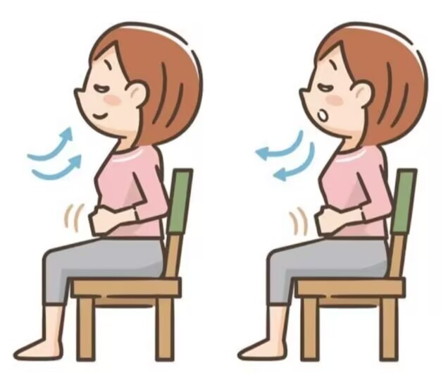

| Técnicas para su fabricación | |
| La técnica de respiración es importante para mantener los pulmones saludables. Una técnica común es la respiración profunda, donde inhalas profundamente y exhalas lentamente, lo que ayuda a mejorar la capacidad pulmonar. |  |